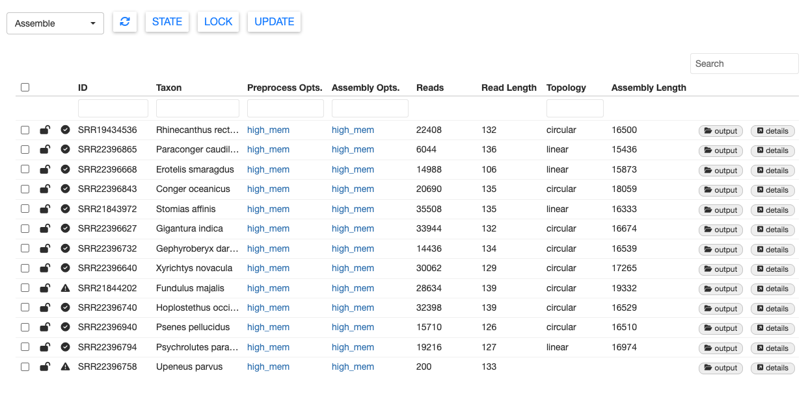

03 - assembly
Inspecting Assembly Results
Once MitoPilot finishes the Assemble workflow, the sample table should be updated with new information.

If you want to locate the results files for a sample, click output. This will open the appropriate folder in the Files pane of your RStudio session.

You can also view the results within the MitoPilot GUI. For example, select SRR21843972 (Stomias affinis), then click details. This will open a new window with the mitogenome sequence.
Select the sequence and click the Fasta button in the bottom right. This will copy the FASTA formatted mitogenome to your clipboard, which you can paste into your favorite text editor. This could be useful for a quick BLAST search.
You can also click the view button, which will open a summary figure in a new tab, including mean read depth, sequence error rate, and GC content.
Notice that in this figure, read depth drops off dramatically at both ends of the sequence. SRR21843972 was unable to assemble a circular mitogenome due to poor read coverage in this region. To assemble a circular mitogenome, you could try running the Assemble module again with different GetOrganelle settings (see their Wiki), try the MitoFinder assembler, or get more sequence data.
Problematic Samples
In this test dataset, there are two problematic samples which returned failed states. You can see which samples failed by looking for the exclamation mark state icon. Selecting a sample with that icon and clicking on the STATE button will confirm.
One failed sample is SRR22396758 (Upeneus parvus). We purposefully truncated the data for this sample to contain only 200 reads.
With so few reads, this sample failed to meet the min_depth threshold and returned a message “Insufficient sequencing depth” in the Notes column. When analyzing your own data, you can specify the min_depth threshold with the MitoPilot::new_project() function.
The other failed sample is SRR21844202 (Fundulus majalis). This sample had plenty of data and we were able to assemble a mitogenome. However, the message in the Notes columns says “Unable to resolve single assembly from reads.”
GetOrganelle produced two alternate assembly paths for this sample. This is usually due to complicated assembly graphs near a repeat region. Please refer to the GetOrganlle paper for more information about multiple assembly paths.
Let’s take a peek at SRR21844202 (Fundulus majalis). Select the sample, scroll all the way to the right, and click on details.
We can see two assemblies listed here. Clicking on view will show us the coverage, error, and GC content graphs for each assembly.
Path #1
Path #2

The two assembly paths differ slightly around 13,000 bp.
We can chose to move forward with just one assembly path by clicking the “ignore” button for one of the assembly paths.
Alternatively, we can use the consensus sequence. Select both paths and click the Align button in the bottom right. The sequence alignment will pop up, showing us that the two paths have 99.9897% sequence similarity.
If we scroll through the alignment, we can see a few base pair differences.
Selecting Trim Consensus will remove any conflicting regions of the aligned assembly paths and produce a shorter consensus sequence of both alignments. Doing so will automatically ignore the original two assembly paths.
Click close and return to the samples table. You will see that the # Paths column for SRR21844202 is highlighted and there is a note indicating that the assembly was edited. This sample has also been automatically changed to a locked state.
Carefully consider your options for samples with multiple assembly paths. You may wish to align each assembly against a reference or compare depth of sequencing coverage. There is no one-size-fits-all solution.
To proceed to the Annotate module, we need to lock the successful samples in the Assemble module. Select all of the samples except SRR22396758 (Upeneus parvus) and click the LOCK button. Then use the dropdown menu in the top left to navigate to the Annotate module.